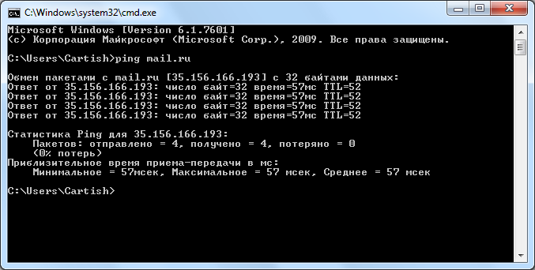

PING - основная утилита командной строки Windows для проверки соединений в сетях на основе TCP/IP. Команда PING с помощью отправки сообщений с эхо-запросом по протоколу ICMP проверяет соединение на уровне протокола IP с другим компьютером, поддерживающим TCP/IP.

Created with the Personal Edition of HelpNDoc: Easily create Help documents